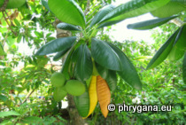

")
| Phrygana: la Nature en Crète principalement, mais aussi d'ailleurs au gré des rencontres... |
|
|
|
 |
| Kalanchoe × houghtonii | Aythya fuligula | Ochrosia oppositifolia |
| Espèces: 710 --- Faune: 343 -- Flora: 362 -- Galles (Bacteria-Fungi): 5 | |||||
| Nouveautés | |||||
| Fauna: | Branta leucopsis | Floraa: | Galium graecum subsp. graecum | Flora: | Medicago praecox |
| Fauna: | Agonopterix propinquella | Fauna: | Ectropis crepuscularia | Fauna: | Larus genei |
| Fauna: | Limicola falcinellus | Flora: | Lamium purpureum | Fauna: | Pterolepis germanica |
| 04 mars 2016 |
| Photographies © phrygana.eu & © Paul Fontaine |
| No part of this work may be used for
commercial purposes without the written permission of the author. Aucune utilisation commerciale n'est possible sans l'autorisation écrite de l'auteur. |